Avsnitt 015, andra utkast efter QA, tagning 2, tider på ordnivå. Bilderna är byggda av utklippen i assets/ på Ängen, med Luddes rigg för alla tre lammen och ansiktena ritade i kod. Pilarna visar rörelsen. Avsnittstid = sångtid + 11 s.
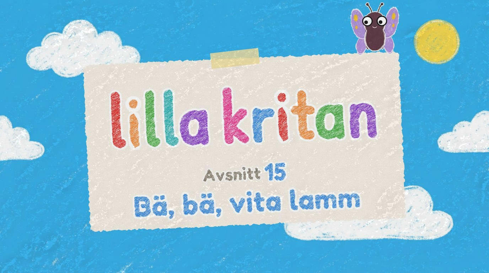
Det befintliga introt ”Kort i himlen” (som 003–014), bara numret och titeln nya: Avsnitt 15 · Bä, bä, vita lamm. I ../intro/.
fast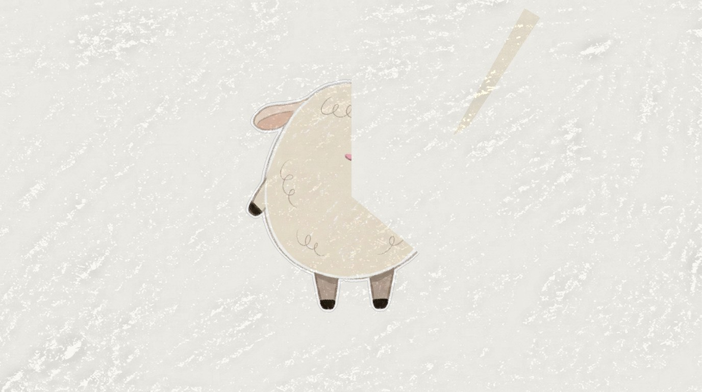
BERÄTTAREN (0:00.3): Vad kan det vara? … (paus 4 s) … (0:05.4) Ett lamm!
Kritan (gräddvit) ritar nosen och öronen, sedan benen och sist den runda ullkroppen.
kritan ritar · papper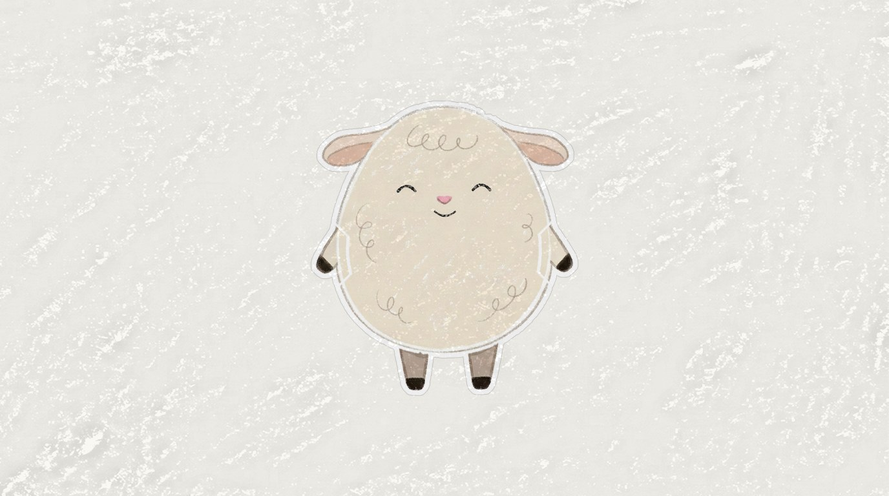
Teckningen blinkar och säger bä (riktigt lammbräkande).
papper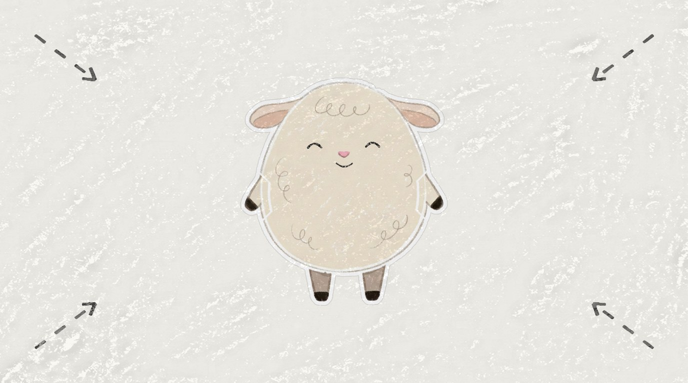
Kameran åker in i teckningen.
zoom in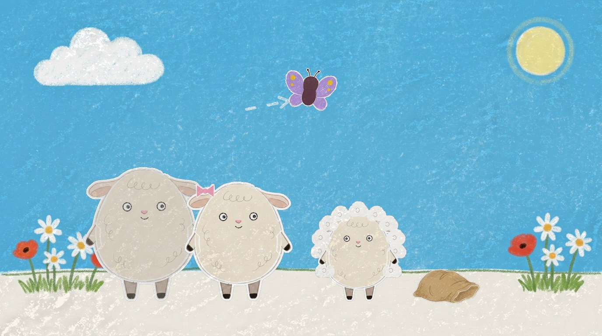
BERÄTTAREN (0:09.6): Säg bä, bä med lammet!
Ludde står extra luddig. Far (störst, gråare) och mor (rosetten) till vänster, säcken tom. Fia glider över himlen.
helbild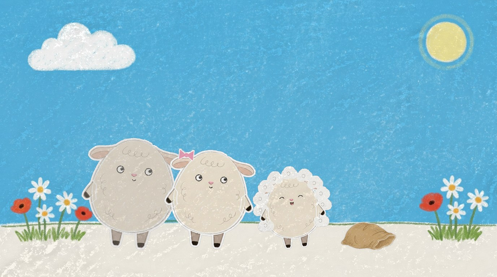
Far och mor lutar sig fram, Ludde vickar på ”bä, bä”.
helbild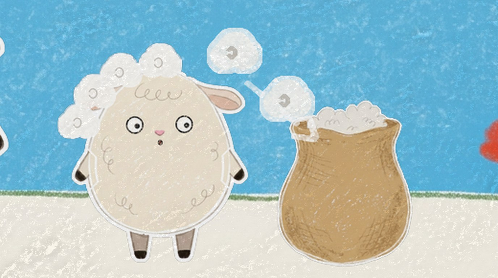
Ludde nickar ”ja, ja” och skakar på sig: tussarna flyger ner i säcken, som blir full.
halvbild Ludde och säcken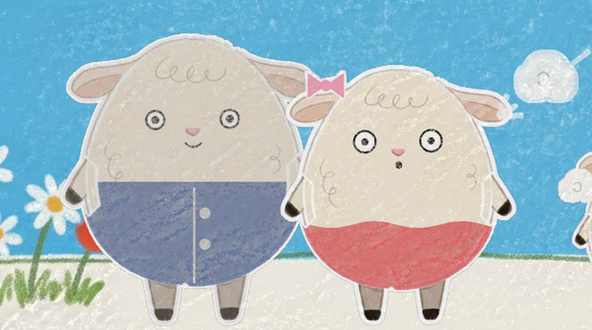
En sak i taget: på ”far” blir en tuss fars rock, på ”mor” blir nästa mors kjol (krit-klotter, pling).
tvåbild far och mor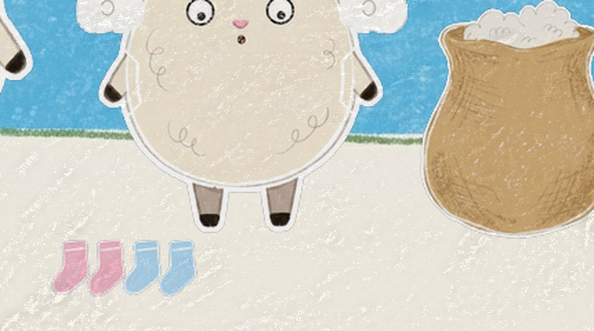
Två tussar blir två par strumpor i en hög framför Ludde.
lågt utsnitt fötterna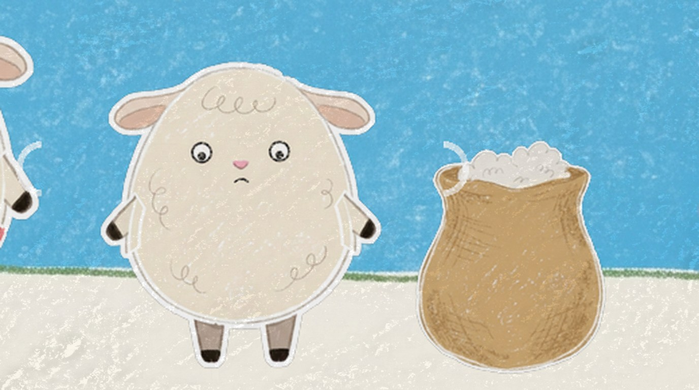
BERÄTTAREN: Brrr! Lammet fryser om fötterna.
Mindre ull nu. Ludde huttrar och tittar ner på sina bara fötter.
närbild Ludde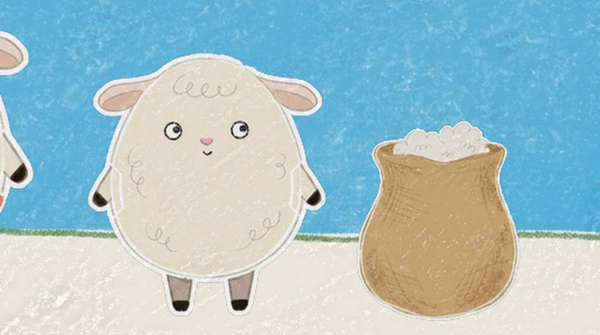
BERÄTTAREN (0:36.2): Vad kan lammet ta på sig?
Ludde tittar på tittaren och väntar.
närbild Ludde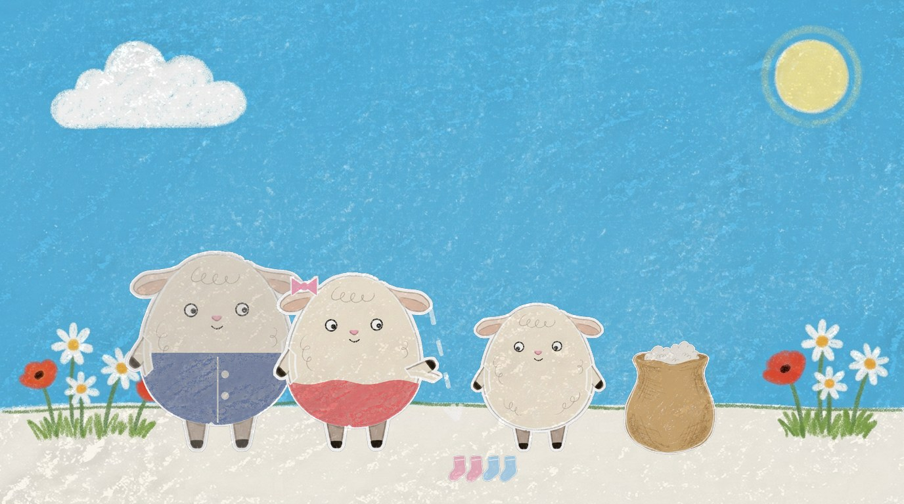
… (paus) … BERÄTTAREN (0:42.5): Strumporna!
Pausen, ≈4,7 s. På ”Strumporna!” pekar mor på högen, den blänker, och Ludde sätter sig vid den.
helbild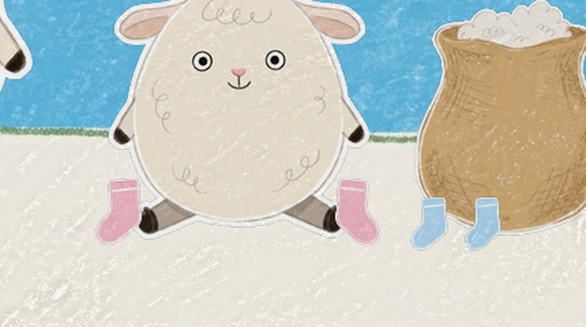
Ludde sitter och tar på sig en strumpa på varje fot, själv: ett, två.
lågt utsnitt fötterna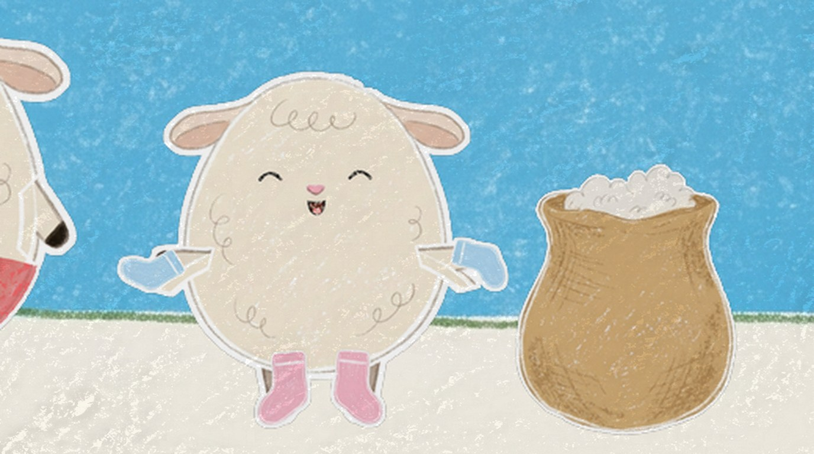
Två strumpor kvar: på händerna! Tre, fyra. Ludde skrattar.
halvbild Ludde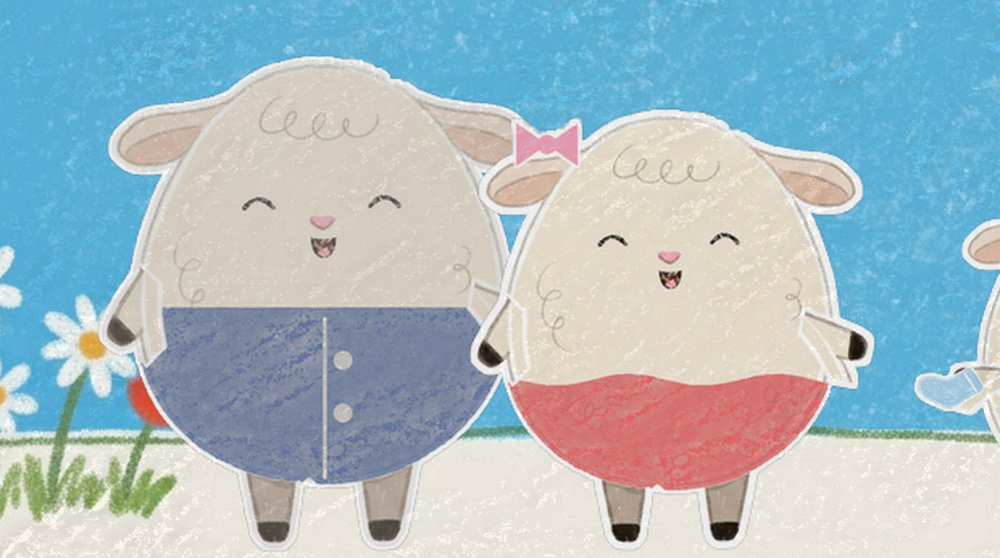
Far visar rocken, mor kjolen. De skrattar åt Luddes händer.
tvåbild far och mor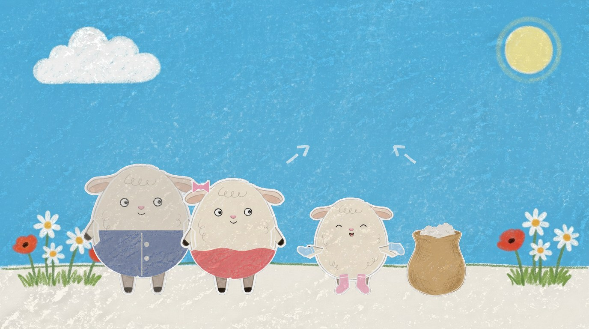
Ludde skuttar till och vickar med alla fyra strumporna, varm och glad.
helbild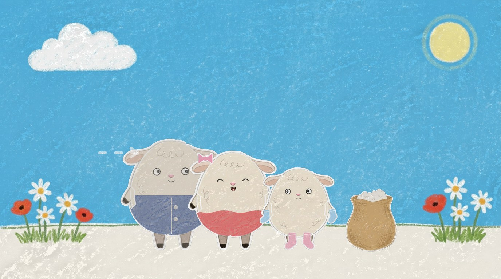
FAR: Tack! · MOR: Tack! · LUDDE: Varsågod!
Far och mor går fram till Ludde.
helbild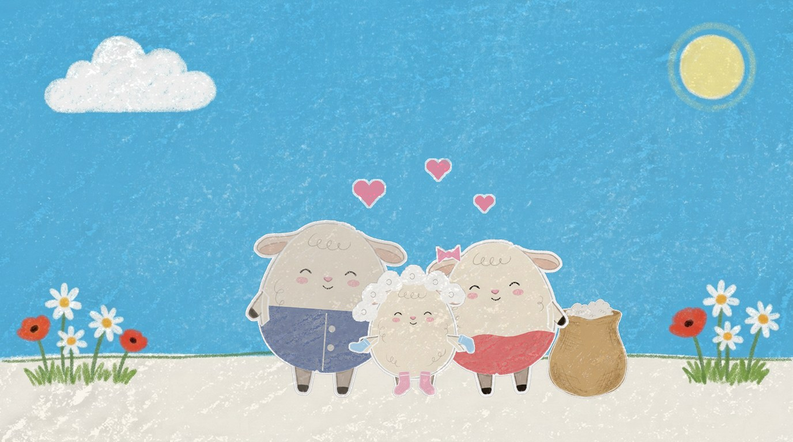
LUDDE: Bä-ä-ä, vad mysigt!
Alla tre kramas, hjärtan flyger upp, ulltussarna växer ut igen.
helbild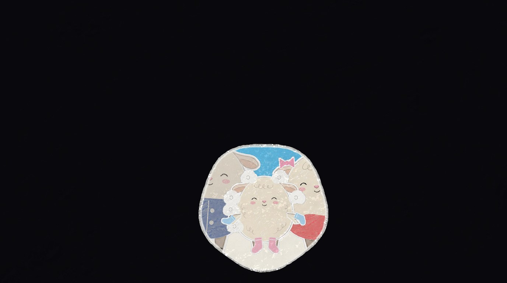
Kritirisen sluter sig runt Ludde, håller över tystnaden, svart.
helbild → kritiris../intro/. Platshållare: Ludde sitter i 12 med den befintliga sittposen; posen där han tar foten är avsnittets nya pose.python3 bygg.py i den här mappen.